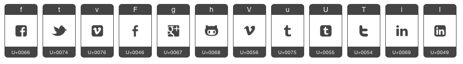

Created: October, 2012
By: Alaja web solutions co.
Thank you for purchasing this theme. Hope you find this work to your liking. Feedback and suggestions always welcome so don't hesitate to comment. If you have questions that are not answered by this help file, please feel free to email via user page contact form. You will find additional information and code samples in the example pages provided. Open them in your browser to view the information, or you can get the same information from the live preview of this theme available on ThemeForest. There are comments within the code files to help you update and modify the theme. If you are happy with the theme, please take a moment and send us a message to support our future development.
Thank you,
Alaja web solutions co.
This theme is designed to be easy to use for either static HTML pages, or to convert for a content management system (CMS). The design is broken down to allow each section to be separated into a self-contained content block. These blocks are marked with comment tags to make finding them easier:
<!-- / End of previous block --> <div id="TheIdOfTheContainer" > <some HTML content /> </div> <!-- / End of TheIdOfTheContainer -->
There are examples of the different layouts and content configurations in the sample pages. Detailed information can be found on the "Layout" page (page.html) included in the sample files.
Theme used responsive center-aligned layout by default.
Text formatting details are also available in the sample files. For this information view the page (page.html) included in the sample files. This contains example code and sample outputs of all the common HTML tags used for content editing.
The logo in the included files with the main content uses "PT Serif" font. These are free fonts available online on Google Web Fonts. Font fallbacks:
'PT Serif', 'Georgia', serif
Social icons use custom font generated on fontello.com. The font files you may find (and replace) inside the /3rd/font folder. Display these icons by using 'social' class on parent. Each icon relative to the symbol in the table below (e.g. f = Facebook, h = GitHub): 
This theme is a fixed-max-width design with pre-configured styles for creating layouts with three or many columns.
The default content area (#main) is easy to find. Look for the HTML with the text "main".
If you would like to edit the color, font, or style of any elements in one of these columns, you would do the following:
#main a {
color: [color];
}
If you find that your new style is not overriding, it is most likely because of a specificity problem. Scroll down in your CSS file and make sure that there isn't a similar style that has more weight. I.E.
#main a {
color: [color];
}
To ensure that your new styles are applied, make sure that they carry enough "weight" and that there isn't a style lower in the CSS file that is being applied after yours.
The HTML code is indented to make it easier to edit. There are also comment markers as a guides to find the beginning and end of major sections.
You may use the included sample files as templates for your own layouts. Be sure to backup a file before editing it, or create a copy and work from it.
There are several CSS files included with this theme. These files are all located in the root folder. Within 'img' folder there are sub-folder 'css' containing style image sources.
style.css - This is the foundation of all the site design. It
controls all the layout and design structure of the theme. The skin files may extend style.css to apply custom styles. Once you have the skin CSS file for you custom skin, be sure to add a link to it in all your HTML files in the
<head> section of each page. You may also wish to edit this file if you choose to customize the main menu.
Your link should look something like this:
<link rel="stylesheet" href="style-dark.css">
You can find more information about the CSS styles and skinning of the design by viewing the sample pages.
Theme imports handcrafted and 3rd-party Javascript files. All related local scripts can be found inside script.js file in the root and the /3rd/ folder.
All the 3rd Party Scripts (MIT, GPL Licenses):
Theme includes a working contact form. This form uses PHP and requires a server running PHP for it to work.
Adding Your Email Address
To add your own email address to the form, open the file "contact.php" and at the very top of the file replace "noreply@noreply.no" with your own email address. Be sure not to delete the quotes, semi-colon or other code when making this change.
$your_email = "noreply@noreply.no";Problems Sending Emails
If you experience trouble sending emails you should verify the following:
- Make sure the address entered in "contact.php" is correct.
- Verify that PHP is installed on the server your site is running on.
- If necessary, contact your hosting provider to ensure they do not need to activate something.
Check that script.js included in the <head> tag of any page with the contact form.
<script src="script.js"></script>
For and example of this review the included contact form sample page.
The most of everything made by yours truly. The 3rd-party script credits you can find in JavaScript section.
Once again, thank you so much for purchasing this product. If you have any questions that are beyond the scope of this document, feel free to pose them in theme's discussion section. If you have a more general question relating to the themes, you might consider visiting ThemeForest forums.
Alaja web solutions co.